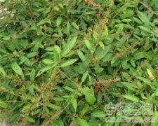

葫芦茶

拼音
Hú Lu Chá
别名
剃刀柄、虫草、金剑草、咸鱼草、百劳舌、鲮鲤舌
来源
豆科山蚂蝗属植物葫芦茶Desmodium triquetrum （L.） DC.，以全株入药。夏秋采收，洗净切细，晒干。鲜用随时可采。
生境分布
生于荒坡、低丘陵地草丛中。分布广东、广西、福建、云南、贵州等地。产于广东、广西等地。
药材特点
半灌木，高1米左右，直立、分枝。枝四棱，棱上被粗毛，后变秃净。单叶，互生，卵状矩圆形、矩圆形至披针形，长6～12厘米，先端短尖，基部浑圆，上面秃净，下面主脉上被毛；叶柄长1～3厘米，有阔翅，翅宽4～8毫米，与叶同质；有小托叶2枚，披针形，长可达15毫米，有线条，脱落。总状花序顶生或腋生，长15～30厘米；苞片小，锥尖状；花多数，淡紫色，长约5毫米；萼阔钟形，长约3毫米，下面裂齿线形；花冠蝶形，旗瓣圆形，先端微凹，翼瓣贴生于龙骨瓣；雄蕊10，2体；雌蕊1，花柱内弯。荚果长约2～5厘米，有荚节5～8个，秃净或被毛，荚节近四方形。花期7月。果期8～10月。
性状
干燥全草，茎多已折断，长约30厘米，粗约0.5厘米。老茎红褐色，细茎红棕色，三角状，棱上被粗毛。叶片红棕色，革质，叶柄具翅，与叶片相连。气香，味微甘。以叶多、干燥、色青带红、无粗梗者为佳。
性味
微苦、涩，凉。
功能主治
清热解毒，消积利湿，杀虫防腐。用于预防中暑，感冒发热，咽喉肿痛，肾炎，黄疸型肝炎，肠炎，细菌性痢疾，小儿疳积，妊娠呕吐，菠萝中毒，小儿硬皮病。
用法用量
0.5～2两；外用适量。
化学成分
叶中含鞣质7.1～8.6％，二氧化硅0.5～2.32％，氧化钾1.3～3.0％。
药理作用
1：煎剂用平板纸片法：对金黄色葡萄球菌有抑制作用
摘录
《全国中草药汇编》